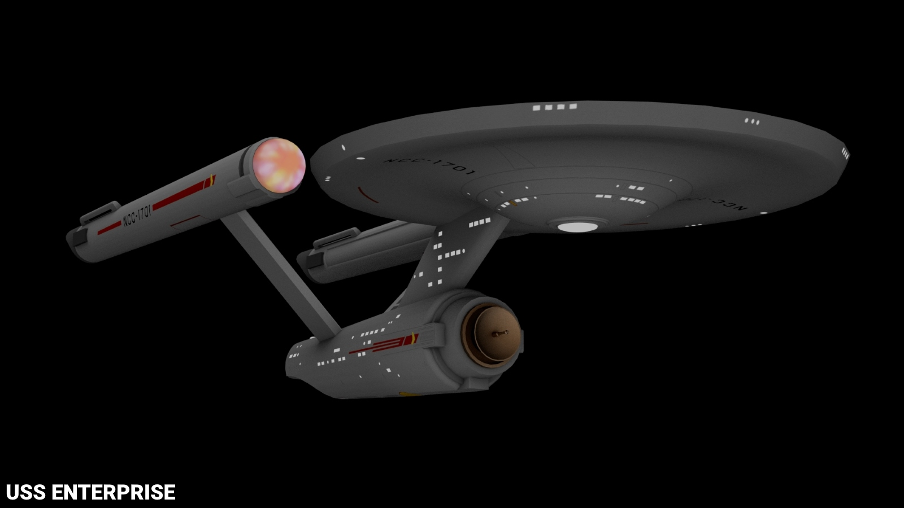
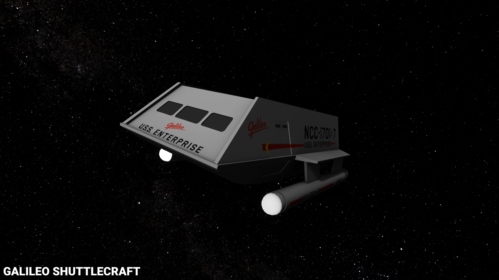
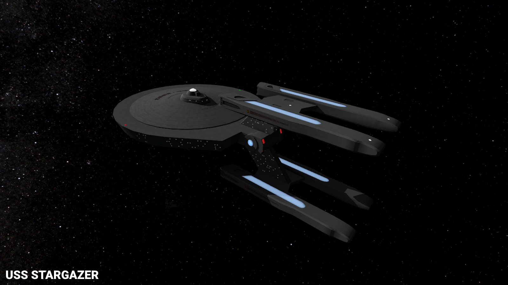
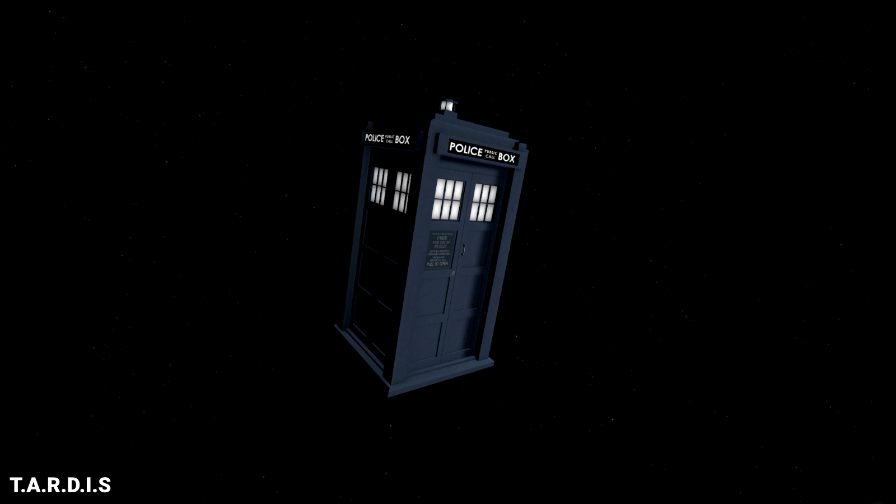
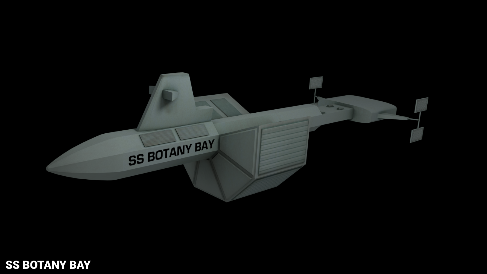
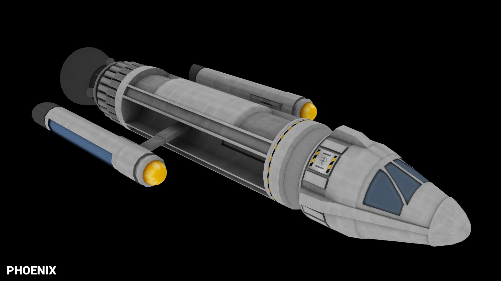
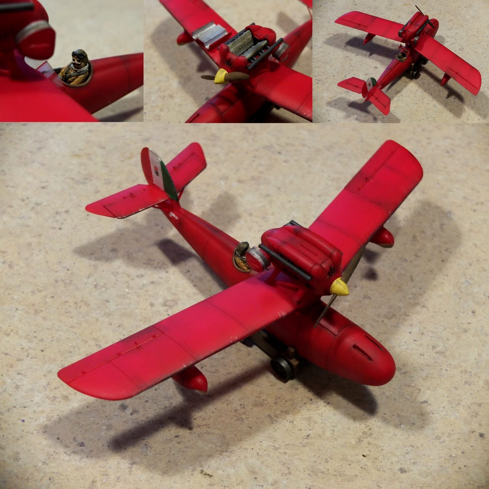
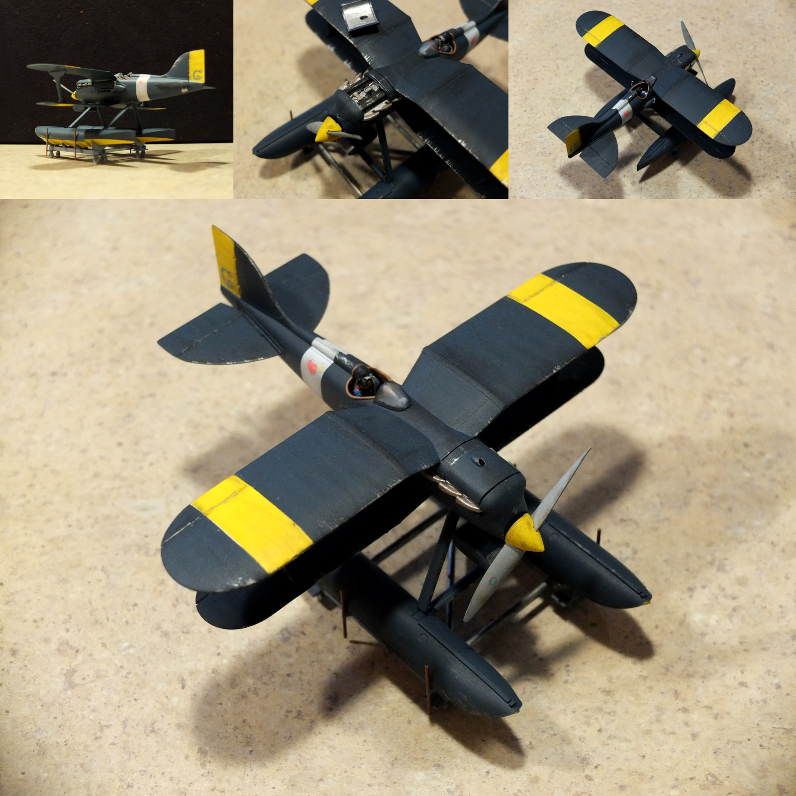
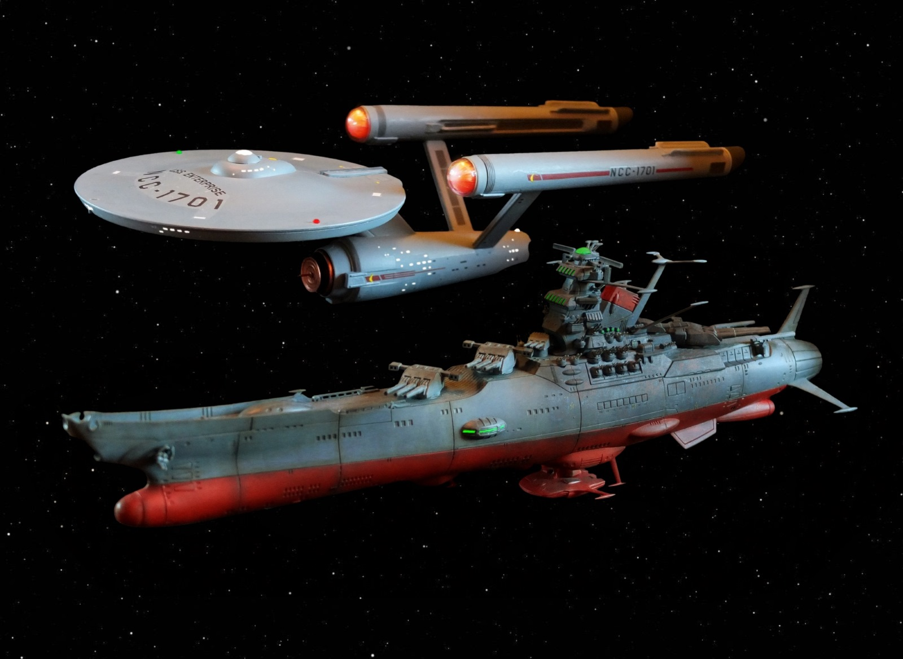
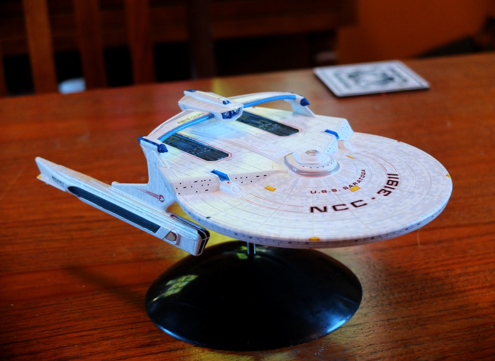

3D modeling is something I've done a fair amount of, most of it relating to science fiction, and with intent to put into the game "Kerbal Space Program". Below are some of the models I've completed, all done in Blender. I've also been putting together scale model kits for awhilw too, some of which are also shown below.
         